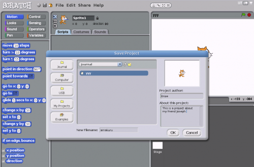

Exiting Activities¶
To stop an Activity, use the touchpad or a mouse to move the cursor to the stop button on the right corner and click. Try to have no more than three Activities open at once.
To stop an Activity using the keyboard, press and hold the ctrl key, and then press the q key. There are some exceptions below.
Scratch¶
There are some “Activities”, such as Scratch, that are stopped from the “File” menu by selecting “Quit” or “Exit”. These activities may require a separate step to save your work by clicking on the “Save” or “Save As” command or may also be done by clicking the folder icon with a downpointing arrow.
In Scratch, for example, you must go to “File” then “Save As” then give your project a name next to “New Filename” then click “OK”.

Etoys¶
The Etoys Activity is stopped by clicking a button that has an ✕ within a white disc, rather than the stop sign.
Terminal¶
The Terminal Activity must be quit using Ctrl/D, Ctrl/Shift/Q, or the stop button. This is because Ctrl/Q has a special meaning in a Terminal.